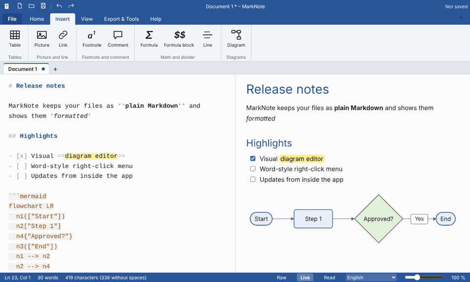

01 / WRITE
Type Markdown, see the document.
Markdown on the left, the formatted page on the right. Type in either pane and the other follows, so you can work the way you prefer.

Free for Windows · Open source
The ribbon, the right-click menu and the blue title bar you already know, with plain .md files underneath. Build diagrams without code, open Word files, and export to PDF and DOCX.

01 — How it works
Four moments that make Markdown feel like a word processor.
01 / WRITE
Markdown on the left, the formatted page on the right. Type in either pane and the other follows, so you can work the way you prefer.
02 / DIAGRAM
Add steps, pick shapes and colours, connect them and label the arrows. Flowcharts, sequence diagrams, pie and Gantt charts are drawn as you type.

03 / FORMAT
A mini toolbar for headings, bold, highlight and lists, paste options, an Insert menu and New comment, exactly where your mouse already is.

04 / SHARE
Reading mode shows the document as a page. Export to a real DOCX, a PDF or a standalone web page, with diagrams and formulas included.

02 — Everything included
Raw Markdown with syntax colours, live preview side by side, and a clean reading mode.
Flowcharts, sequence diagrams, pie and Gantt charts from simple tables, saved as Mermaid.
Ribbon, blue title bar, right-click menu with a mini toolbar, tooltips that teach the syntax.
A .docx or .html file is converted to Markdown when you open it, images included.
PDF, a real Word document, a standalone web page or plain .md.
Interactive table builder, relative image paths, footnotes, hidden comments and LaTeX.
Automatic snapshots you can restore, and several documents open at once in tabs.
MarkNote tells you when a new version is out, and the installer can update itself.
03 — Speaks 13 languages, follows your Windows setting
04 — Privacy
MarkNote runs entirely offline. Documents are read and written only when you open or save them.
No telemetry, no analytics, no ads. Nothing to sign up for.
At most once a day it asks GitHub whether a new version exists. You can turn that off. Privacy policy
05 — Get started
MarkNote-Setup.exe is recommended: fastest start, opens .md files and installs future updates for you. Prefer no install? Use the portable exe.
The app is not code-signed yet, so Windows may show a SmartScreen warning the first time. Choose More info → Run anyway.
Open a Markdown or Word file, or just start typing. Press F1 for help.